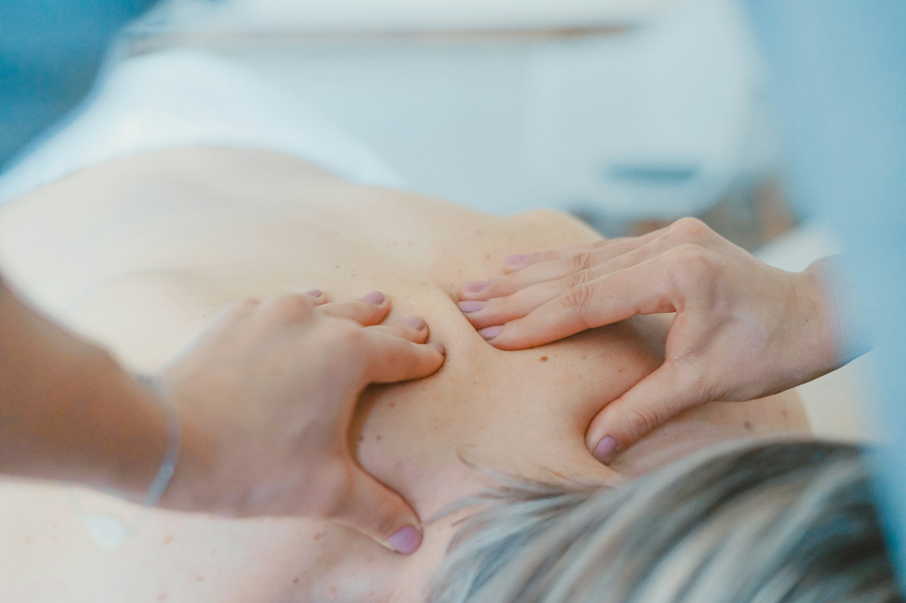

Drenagem linfática
Estímulo manual do sistema linfático para reduzir inchaço, retenção e dar leveza ao corpo — técnica precisa, sem agredir.
Desinche · CirculaçãoDrenagem, massagem modeladora, pós-operatório e tratamentos faciais conduzidos por quem entende de fisiologia. Resultado real, cuidado clínico — no coração de São Luís.

O DermoFisio nasceu para tratar a estética com o rigor de quem estudou o corpo de verdade. A dermato-funcional vai além do relaxamento: é ciência aplicada à pele, à musculatura e à circulação, com protocolo individual e acompanhamento de resultado.
Por isso quem busca redução de medidas, recuperação pós-cirúrgica ou revitalização facial em São Luís confia aqui — e nos dá 4,7 no Google.

Da drenagem ao pós-operatório, cada tratamento é definido depois de avaliar o seu caso. Veja o que cuidamos no DermoFisio.
Estímulo manual do sistema linfático para reduzir inchaço, retenção e dar leveza ao corpo — técnica precisa, sem agredir.
Desinche · CirculaçãoMovimentos firmes e direcionados para modelar o contorno corporal, ativar a circulação e trabalhar a gordura localizada.
Contorno · MedidasAcompanhamento dermato-funcional no pós-cirúrgico: reduz edema, previne fibrose e acelera a recuperação com segurança.
Pós-cirúrgico · CuidadoProtocolos para viço, firmeza e textura da pele do rosto — limpeza profunda, estímulo de colágeno e cuidado contínuo.
Pele · ViçoTécnicas para firmeza de pele e tônus muscular, combatendo a flacidez de corpo e face com estímulo direcionado.
Firmeza · TônusAntes de tudo, um diagnóstico do seu caso para montar o protocolo certo. É aqui que começa todo resultado.
Diagnóstico · PlanoCada técnica tem fundamento anatômico e fisiológico — não improviso. É dermato-funcional de verdade.
Seu corpo, seu objetivo, seu plano. Avaliamos antes e ajustamos a cada sessão.
Você vê a evolução. Medimos, comparamos e mantemos você no caminho do resultado.
Atendimento reservado, higiene e conforto — do pós-operatório à revitalização facial.
A nota 4,7 no Google é construída sessão a sessão — com resultado, cuidado e atendimento próximo. Venha conferir por que tantas clientes confiam no DermoFisio.
Estamos em São Luís — MA, com atendimento por agendamento. Marque sua avaliação direto pelo WhatsApp e escolha o melhor horário.

Agende uma avaliação no DermoFisio e descubra o protocolo certo para o seu objetivo. É rápido, é pelo WhatsApp, e o primeiro passo é uma conversa.
Agendar minha avaliação